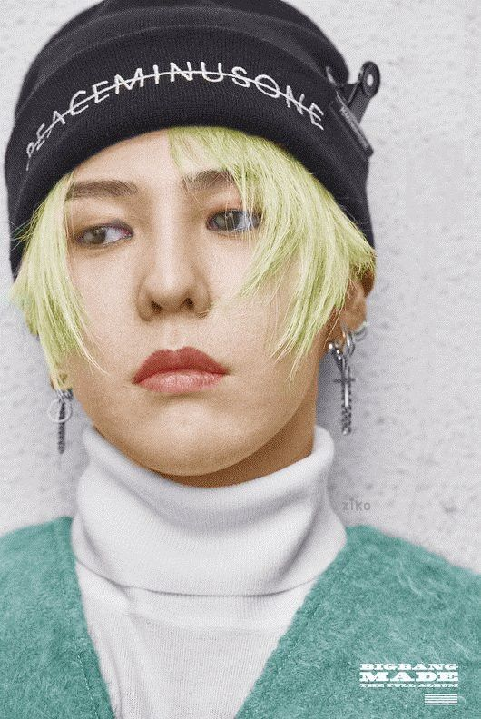
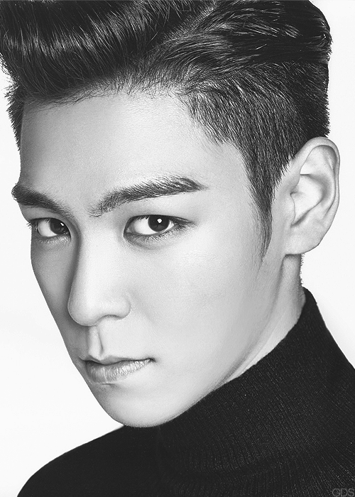
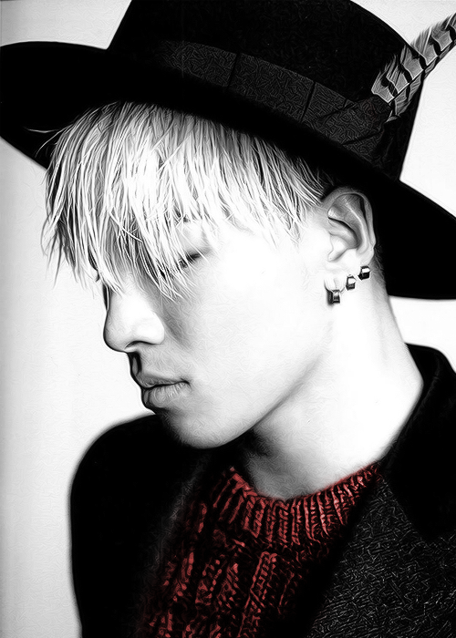
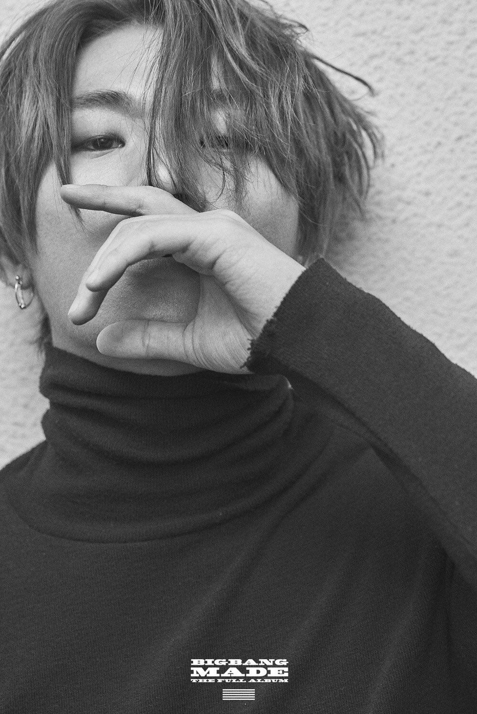
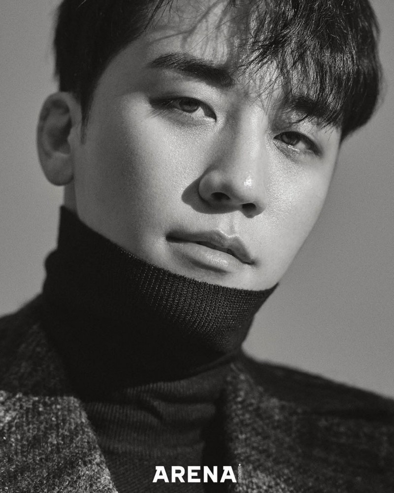

BIGBANG
We love V.I.P
BigBang là nhóm nhạc nam của công ty chủ quản YG được chính thức ra mắt vào ngày 19/08/2006. Buổi ra mắt của nhóm được tổ chức vào đêm hòa nhạc kỷ niệm 10 năm thành lập của YG. Nhóm nhạc có 6 thành viên sau đó 1 thành viên đã rời nhóm. Đội hình chính thức có 5 thành viên bao gồm: G-Dragon, T.O.P, Taeyang, Daesung và Seungri. Tên nhóm có nguồn gốc từ BiaBang Theory giống như một “cú nổ lớn” của vũ trụ. Nhà YG kỳ vọng sẽ tạo nên một “vụ nổ” âm nhạc lớn chưa từng có trong ngành công nghiệp âm nhạc. Sự thật nhóm nhạc đã gây dựng phong cách đậm chất đường phố và Hip-hop trong lòng người hâm mộ. BIGBANG lightstick có ý nghĩa mạnh mẽ thể hiện quyền lực của 5 chàng trai tại đấu trường âm nhạc. Đây là một trong những Lightstick lâu đời nhất của Kpop và được bình chọn là lightstick đẹp nhất 2018.
Dưới sự dẫn dắt của YG Entertainment, Big Bang liên tiếp phát hành những chuỗi đĩa đơn và EP nhưng chỉ đạt được những thành công khiêm tốn . Nhóm chỉ thực sự đột phá với EP Always được phát hành vào năm 2007, cùng với đĩa đơn số một của họ là "Lies" (Tiếng Triều Tiên: 거짓말; Romaja quốc ngữ: Geojitmal) . Những EP tiếp theo Hot Issue và Stand Up tiếp tục khẳng định vị trí của họ trong số những nhóm nhạc hip-hop hàng đầu tại Hàn Quốc . Sau khi nhận giải "Nghệ sĩ của năm" của chương trình Mnet KM Music Festival và giải thưởng "Seoul Gayo Daesang" , nhóm mở rộng hoạt động sang thị trường Nhật Bản bằng việc phát hành một số mini album và đĩa đơn được phát sóng trên các kênh truyền thông . Tuy nhiên, những sản phẩm này không có được bất kỳ sự quảng bá nào cho đến khi đĩa đơn chính thức đầu tiên tại Nhật Bản của họ là My Heaven phát hành vào năm kế tiếp . Họ sau đó tiếp tục ra mắt tại Nhật 2 album gồm: Big Bang (2009), Big Bang 2 (2011). Trong thời gian quảng bá tại Nhật Bản, các thành viên bắt đầu thực hiện các dự án solo như các album và EP của Taeyang và G-Dragon, G-Dragon và T.O.P hợp tác với tên GD & TOP. Vào năm 2015, Big Bang ra mắt bốn album đĩa đơn, "M," "A," "D," và "E,", mở đường cho album Made. Các bài hát trong các đĩa đơn giúp ban nhạc mang về nhiều thành công về thương mại và giành giải Nghệ sĩ của năm tại MAMA 2015.
MEMBERS
Các thành viên của BIGBANG
G-Dragon (Kwon Ji-yong)
Khoảng 8 tuổi, G-Dragon đã trở thành một thực tập sinh của SM Entertainment. Đến năm 12 tuổi, anh là thực tập sinh của nhà YG. G-Dragon là người nhút nhát và khá khiêm tốn trong cuộc sống. Năm 2009, G-Dragon phát hành album solo đầu tiên mang tên “Heartbreaker”. Anh là trưởng nhóm và là người sáng tác kiêm sản xuất chính của BigBang. Đồng thời anh cũng là thần tượng Kpop kiếm nhiều tiền từ bản quyền bài hát nhất do anh tự sáng tác. G-Dragon nhập ngũ vào ngày 27 tháng 2 năm 2018 và xuất ngũ vào ngày 28 tháng 10 năm 2019. Thông tin GD và Jennie BLACKPINK hẹn hò được netizen vui mừng.
Vượt qua mọi trở ngại, GD lần nữa đến gần với âm nhạc khi anh trở thành thực tập sinh cho một công ty (từ lúc 8 – 13 tuổi). Nhờ vào cơ duyên nào đó anh biết đến nhóm nhạc Wu-Tang Clan. Đây chính là lý do mà GD theo đuổi dòng nhạc rap cho đến tận bây giờ.
TOP (Choi Seung-hyun)
Choi Seung-hyun (tiếng Triều Tiên: 최승현; Hanja: 崔胜賢; Hán-Việt: Thôi Thắng Huyễn; sinh ngày 4 tháng 11 năm 1987), hay được biết đến với nghệ danh T.O.P, là một nam rapper, ca sĩ, nhạc sĩ, nhà sản xuất thu âm và diễn viên người Hàn Quốc, nổi tiếng với tư cách là thành viên của nhóm nhạc đến từ Hàn Quốc Big Bang.
T.O.P đảm nhận vai trò rapper chính trong nhóm nhạc BigBang. Anh còn có khả năng beatbox siêu đỉnh và tạo ra những âm thanh đặc trưng của nhóm. T.O.P gây ấn tượng với khán giả qua dáng người thanh mảnh, lạnh lùng đầy chất lãng tử. T.O.P nhập ngũ vào ngày 9 tháng 2 năm 2017 với tư cách là một cảnh sát nhập ngũ và xuất ngũ vào ngày 6 tháng 7 năm 2019. Anh từng dính vào nhiều scandal về chất cấm và chịu án 2 năm tù treo.
Taeyang (Dong Young-bae)
Taeyang là nam ca sĩ, nhạc sĩ nổi tiếng người Hàn Quốc. Anh ra mắt với vai trò là thành viên của nhóm nhạc nam huyền thoại Big Bang. Taeyang được biết đến là một nghệ sĩ đa tài và đời sống trong sạch. Dù không sở hữu gương mặt nam thần nhưng thân hình của anh được fan hâm mộ đánh giá cao. Những đĩa nhạc hay phong cách âm nhạc của Taeyang đều được khán giả thừa nhận về mọi mặt.
Taeyang được biết đến với khả năng thanh nhạc ấn tượng. Anh được đào tạo để trở thành một rapper nhưng ra mắt trong BigBang với tư cách là giọng ca chính. Đồng thời Taeyang cũng là một Main Dancer trong nhóm. Taeyang nhập ngũ vào ngày 12 tháng 3 năm 2018 và xuất ngũ vào ngày 10 tháng 11 năm 2019. Hiện nay, anh và diễn viên Min Hyorin đã kết hôn.
Daesung (Kang Dae-sung)
Daesung tên thật là Kang Dae-sung, anh được biết đến là 1 trong 5 thành viên của nhóm nhạc nam nổi tiếng Big Bang. Sự thành công của Big Bang đã tạo nên đế chế khó sụp đổ trong thời kỳ hoàng kim Kpop. Trước khi nổi tiếng cùng với tên tuổi Big Bang như hiện nay, Daesung từng trải qua thời kỳ khó khăn khi vấp phải sự phản đối kịch liệt của gia đình. Trong những thế, khi nhóm nhạc mới dedut anh nhận lấy vô số lời chỉ trích nặng nề và dè bỉu về nhan sắc của mình. Nhưng dựa vào tài năng và thực lực bản thân, anh đã đập tan định kiến trước đây của khán giả,
Daesung là thành viên được chọn thứ ba của BigBang. Anh có thể chơi trống và là giọng ca chính trong nhóm nhạc BigBang. Nam ca sĩ gây ấn tượng bởi giọng hát ấm áp, truyền cảm tới người nghe. Daesung nhập ngũ vào ngày 13 tháng 3 năm 2018 và xuất ngũ vào ngày 10 tháng 11 năm 2019.
Seungri (Lee Seung-hyun)
Seungri là ca sĩ, nhạc sĩ, diễn viên, nhà sản xuất âm nhạc và doanh nhân người Hàn Quốc. Anh được biết đến nhiều nhất với tư cách là thành viên của nhóm nhạc Hàn Quốc nổi tiếng Big Bang. Anh cũng là thành viên trẻ tuổi nhất trong nhóm nhạc này. Seungri là người Hàn Quốc và là thành viên của nhóm nhạc Big Bang không sống ở Seoul. Sinh ra ở vùng quê nghèo Kwang Ju, Seungri phải sống tự lập từ rất nhỏ. Từ khi còn nhỏ anh đã có niềm đam mê với vũ đạo và thường xuyên rủ bạn bè để tập luyện. Với nghị lực phi thường và đam mê ca hát của mình, anh quyết định rời xa gia đình để lên Seoul lập nghiệp.
Seungri được biết đến là cựu thành viên của nhóm nhạc BigBang. Anh đảm nhận vai trò biên đạo các điệu nhảy cho nhóm nhạc. Ngày 11/03/2019, Seungri đã tuyên bố giải nghệ và chính thức chấm dứt hợp đồng với YG. Anh bị dính vào scandal về tình dục đến kinh doanh trái phép và hiện đã bị kết án tù.